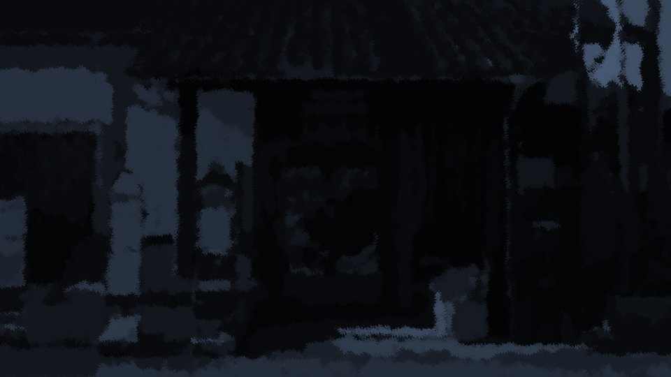
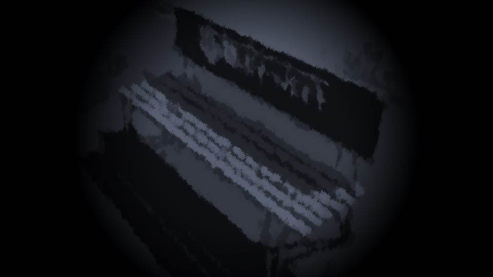
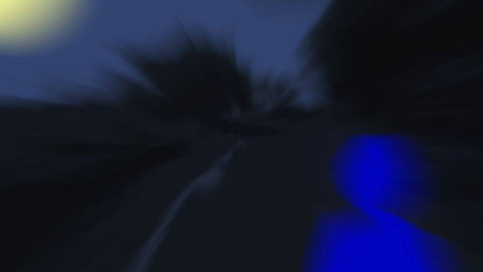
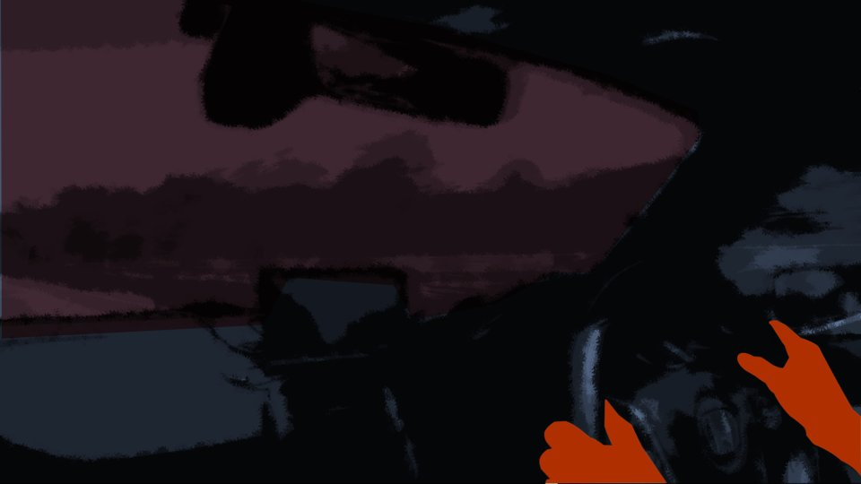

Far End of the Mountain
Air that had turned sharply cold assailed us.

The place where we had gotten off was an unstaffed station called Sakuraoka, and there was nothing around it.
If there was a culprit posing as the shinigami, a place as hard as possible for people to reach was better.
When the train had stopped at this station, we decided to get off here.
If there was a culprit posing as the shinigami, a place as hard as possible for people to reach was better.
When the train had stopped at this station, we decided to get off here.
That we had come here, no one knew but us.
No one else had gotten off at this station, either.
No one else had gotten off at this station, either.
All around, it had gotten completely dark.
True to the name Sakuraoka, the whole mountain was covered in cherry trees. [TN: Sakuraoka means 'cherry hill.']
There was no wind, no cars, no sign of people.
There was only 'a presence of no presence,' and the moonlight.
It was an unfamiliar station name, and I didn't really know whereabouts we were, either.
True to the name Sakuraoka, the whole mountain was covered in cherry trees. [TN: Sakuraoka means 'cherry hill.']
There was no wind, no cars, no sign of people.
There was only 'a presence of no presence,' and the moonlight.
It was an unfamiliar station name, and I didn't really know whereabouts we were, either.

I led Haruka by the hand and sat down on a bench that was rotting away.
Since then, we had not exchanged a word.
Haruka had not cried, nor shown any sign of being frightened.
Only, she had pressed her lips firmly shut and gazed out the train window as it grew dark.
Since then, we had not exchanged a word.
Haruka had not cried, nor shown any sign of being frightened.
Only, she had pressed her lips firmly shut and gazed out the train window as it grew dark.
Haruka was looking all around, searching for something.
And then, she let go of my hand and walked off to stand under one of the few streetlights.
And then, she let go of my hand and walked off to stand under one of the few streetlights.
Before long, Haruka came walking back this way with something in her hand.
What she was holding in her hand was...
What she was holding in her hand was...
"Hey! Haruka...!"
Haruka came closer, holding a long, sturdy tree branch.
"Haruka... no way...?"
Had I been deceived after all?
Had it been a make-believe friendship?
Or else―
Haruka came closer, holding a long, sturdy tree branch.
"Haruka... no way...?"
Had I been deceived after all?
Had it been a make-believe friendship?
Or else―

"This should be of at least a little use...
If the shinigami won't listen to what I say...
With this, I'll protect Natsumi!"
Haruka sat down on the bench and gripped the branch tight.
It looked heavy, and hard.
I had jumped to conclusions, but it seemed that somewhere in my heart, I was still afraid of Haruka.
Haruka sat down on the bench and gripped the branch tight.
It looked heavy, and hard.
I had jumped to conclusions, but it seemed that somewhere in my heart, I was still afraid of Haruka.
"Whatever comes... I'm the one who'll protect you, no matter what!"
Haruka gripped the tree branch tight once more.
Haruka gripped the tree branch tight once more.

I heard the buzz of Haruka's phone.
"It's Goto..."
She showed signs of hesitating a little over whether to answer.
"It's Goto..."
She showed signs of hesitating a little over whether to answer.

"Yes... hel―"
"Hello, Senpai!? Where on earth are you!? And I can't get through to Kogori-senpai's phone either!"
Goto's loud voice reached us over here, too.
We were deep in the mountains, but it seemed the signal was reaching us.
"Hello, Senpai!? Where on earth are you!? And I can't get through to Kogori-senpai's phone either!"
Goto's loud voice reached us over here, too.
We were deep in the mountains, but it seemed the signal was reaching us.
"Sorry, Goto... Right now, I'm with Natsumi. Some place called Sakuraoka Station, I don't really know where.
Natsumi... is fine."
"Goto, it's me, Natsumi. Right now, it's just the two of us, me and Haruka."
"Goto, it's me, Natsumi. Right now, it's just the two of us, me and Haruka."
"Thank goodness..."
And then, Haruka switched it to speakerphone.
"Senpai, please tell me anything. I'm on your side no matter what, Senpai."
"All right... I can trust you and Natsumi."
"Thank you."
And then, Haruka switched it to speakerphone.
"Senpai, please tell me anything. I'm on your side no matter what, Senpai."
"All right... I can trust you and Natsumi."
"Thank you."
"So, Goto, you want to ask something, right? What should I tell you?"
"First, how much does Kogori-senpai know?"
"I told her everything. That the one who killed Natsumi's dad was me. And that the culprit of the Megasawa City case, who has cursed six people to death so far, is me too. If you've been with the police, you already know, right?"
"First, how much does Kogori-senpai know?"
"I told her everything. That the one who killed Natsumi's dad was me. And that the culprit of the Megasawa City case, who has cursed six people to death so far, is me too. If you've been with the police, you already know, right?"
"Yes, I know...
But, I just can't believe that Niimura-senpai is the culprit. Because, when you think about it, a lot of things are strange...!"
"Goto, you're saying that too...? Well, fine, have it that way... But, I guess I'd like to hear the reason you think so."
"Goto, you're saying that too...? Well, fine, have it that way... But, I guess I'd like to hear the reason you think so."
"Niimura-senpai, you think that before coming back to Motoki-cho, you cursed people to death three times―six people in all, right? That you're the culprit of the Megasawa City case."
"Yeah, so?"
"Yeah, so?"
"But both Senpai and Senpai's mother had perfect alibis at the time. All three times, what's more.
So the police just asked you some questions and that was the end of it; you never even became a possible suspect."
"And what about it...!"
"And what about it...!"
"So Senpai, you have the power to curse, and you can kill people in a way that won't get you arrested. That's what you're convinced of, right?"
"Really, you're such a pain...! What are you trying to say!"
"Really, you're such a pain...! What are you trying to say!"
"............"
There was a pause for a while, but Goto began to speak slowly, in a calm voice.
"From here on, it's nothing more than my guess, but... if it turns out to be right..."
There was a pause for a while, but Goto began to speak slowly, in a calm voice.
"From here on, it's nothing more than my guess, but... if it turns out to be right..."
"Really!
Hurry up and say it!!"
"Please run away, right now."
"Please run away, right now."
"Huh? Run away?
We've already come all the way out to the deep mountains like this... why would we need to run any farther..."
"This isn't just Kogori-senpai, it's Niimura-senpai too! Both of you, please get away from there right now!"
"If it were just Natsumi, sure, but me too...? Haha... What are you saying, Goto. So Dad's going to curse me to death too?"
Haruka was trembling, but even so she scoffed.
"This isn't just Kogori-senpai, it's Niimura-senpai too! Both of you, please get away from there right now!"
"If it were just Natsumi, sure, but me too...? Haha... What are you saying, Goto. So Dad's going to curse me to death too?"
Haruka was trembling, but even so she scoffed.
"Senpai, the Megasawa City case, the one where you say you killed them with a curse... That was a murder case, plain and simple!"
"All right, Goto, that's enough. I'm hanging up."
"Senpai! Please, listen to me!"
"Knock it off! Why would Dad come after me too!"
"All right, Goto, that's enough. I'm hanging up."
"Senpai! Please, listen to me!"
"Knock it off! Why would Dad come after me too!"
At that moment, a wind swept through this spot, where there had been no wind.

"Ah, ahh...!"
"What's wrong, Natsumi!?"
It's dangerous...! This place is extremely dangerous...!
My instinct was ringing the alarm bell more violently than it ever had before...!
"What's wrong, Natsumi!?"
It's dangerous...! This place is extremely dangerous...!
My instinct was ringing the alarm bell more violently than it ever had before...!
"Kogori-senpai! Could it be that intuition of yours!?
Come on, Ojisan, it's Sakuraoka Station! Go full speed!"
"A-all right...!"
From the other end of the phone, I heard a man's voice and a patrol car's siren.
"A-all right...!"
From the other end of the phone, I heard a man's voice and a patrol car's siren.
"Haruka, it's dangerous here! Let's run, quick!"
I pulled Haruka by the hand and stood up.
Right after that, there was the sound of the bench we had been sitting on being struck with a blunt weapon, and splitting.
I pulled Haruka by the hand and stood up.
Right after that, there was the sound of the bench we had been sitting on being struck with a blunt weapon, and splitting.
 video: 桜.wmv
video: 桜.wmv
"H-hey... it showed up, Natsumi...!"
Dressed in big red clothes, holding a nata and a mace.
And on its face, a 'Noh mask.'
No doubt about it...!
Dressed in big red clothes, holding a nata and a mace.
And on its face, a 'Noh mask.'
No doubt about it...!
video: 桜.wmvThis is the "shinigami"...!
video: 桜.wmvHaruka put away her phone, gripped the branch, and stood in front of me with her back to me.
"Stop it, Dad! It's me! It's Haruka! I'm begging you, don't lay a hand on Natsumi!"
"Stop it, Dad! It's me! It's Haruka! I'm begging you, don't lay a hand on Natsumi!"
video: 桜.wmvBut, heedless, the shinigami swung the nata up high.
"Daaamn! Raaaah!"
Haruka boldly leaped at the shinigami!
"Daaamn! Raaaah!"
Haruka boldly leaped at the shinigami!
video: 桜.wmvThe nata the shinigami swung down and Haruka's branch collided in midair, and they locked blade to blade.
"Dad, stop it...!"
The shinigami, the nata in one hand; Haruka, the branch in both hands. Like this, Haruka should have the upper hand!
But...!
"Dad, stop it...!"
The shinigami, the nata in one hand; Haruka, the branch in both hands. Like this, Haruka should have the upper hand!
But...!
video: 桜.wmv"Whoa...!"
The shinigami, with one hand, pushed back Haruka's entire body weight.
"Damn...! What is it with this monstrous strength...!"
Haruka tried to push back with all her might, but the shinigami, standing upright, did not budge an inch.
Little by little, Haruka's branch began to creak and crack, and was about to break.
"Th-this is bad...!"
The shinigami, with one hand, pushed back Haruka's entire body weight.
"Damn...! What is it with this monstrous strength...!"
Haruka tried to push back with all her might, but the shinigami, standing upright, did not budge an inch.
Little by little, Haruka's branch began to creak and crack, and was about to break.
"Th-this is bad...!"
video: 桜.wmv"Ah...!"
When the shinigami yanked the nata back all at once, the branch, with the nata still stuck in it, slipped right out of Haruka's hands.
"Damn! We're getting out of here!"
Haruka pulled me by the hand and dashed off toward the downhill slope.
When the shinigami yanked the nata back all at once, the branch, with the nata still stuck in it, slipped right out of Haruka's hands.
"Damn! We're getting out of here!"
Haruka pulled me by the hand and dashed off toward the downhill slope.

video: 桜.wmv"Haruka! That thing...!"
"Anyway, we're getting out of here!"
We started running down the road in the darkness.
It was paved with asphalt, barely, but there was no sign at all of any cars or people passing by.
It was an unstaffed station, so we couldn't call for help.
"Anyway, we're getting out of here!"
We started running down the road in the darkness.
It was paved with asphalt, barely, but there was no sign at all of any cars or people passing by.
It was an unstaffed station, so we couldn't call for help.
video: 桜.wmv"Senpai! Are you all right!?"
From Haruka's pocket, I heard Goto's voice.
It seemed the phone was still connected.
"Hey, Goto! That was Dad after all! It's Dad, turned into a shinigami! That monstrous strength, there's no way it's human! It's my dad, the one who died!"
Haruka shouted at the phone in her pocket as she ran, but there was no answer from Goto.
"Hey! Goto, can you hear me!?"
From Haruka's pocket, I heard Goto's voice.
It seemed the phone was still connected.
"Hey, Goto! That was Dad after all! It's Dad, turned into a shinigami! That monstrous strength, there's no way it's human! It's my dad, the one who died!"
Haruka shouted at the phone in her pocket as she ran, but there was no answer from Goto.
"Hey! Goto, can you hear me!?"

"Hey, Ojisan! There's no phone signal here!"
"It's probably no use out here! I'll use the police radio!"
"How much longer to Sakuraoka Station!?"
"On a winding mountain road like this, it'll take another hour at least! I'm calling for backup! In 30 minutes or so, the local guys should seal off the mountain roads and rush to the scene!"
"30 minutes...!"
"It's probably no use out here! I'll use the police radio!"
"How much longer to Sakuraoka Station!?"
"On a winding mountain road like this, it'll take another hour at least! I'm calling for backup! In 30 minutes or so, the local guys should seal off the mountain roads and rush to the scene!"
"30 minutes...!"
"This is Motoki Police Station, Assistant Inspector Ise! Do you read me!?"
Ise-san began shouting into the patrol car's mic.
Ise-san began shouting into the patrol car's mic.
"―This is Nishisawa Police. I can hear―you, but you're breaking―up a little. Over."
"Incident near Sakuraoka Station! Send units right away!"
"―Roger. We will―move out―right away."
"Incident near Sakuraoka Station! Send units right away!"
"―Roger. We will―move out―right away."
"And seal off all the mountain roads! The culprit may be using a vehicle!
The victims are two high-school girls! Take them into protection as soon as you find them!
The culprit appears to be armed with blunt weapons and blades!"
"―Roger that. We'll head toward Sakuraoka Station―and seal off the Sakuraoka road―and respond to a violent incident.
Please―allow 30 minutes until arrival―on site."
30 more minutes...! Please! Somehow, get away!
30 more minutes...! Please! Somehow, get away!
Read ✓ Next in this arc →